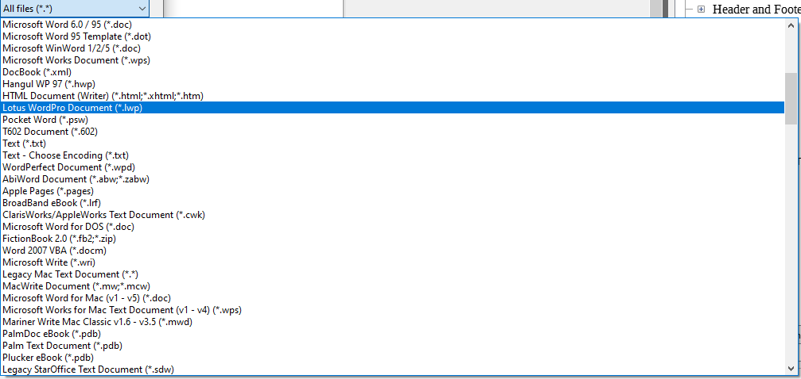

LibreOffice is an extremely versatile Open Source office suite.
Scribus has some powerful import filters for the older OpenOffice.org native file formats, as well as the international standard and LibreOffice's native family of formats ODF (Open Document Format), which is also supported by many other suites, including Microsoft Office, WordPerfect Office or SoftMaker Office.
More importantly, LibreOffice supports a long and growing list of file formats, which means that you can use it as a versatile file converter, especially for word processing (text), graphics (vector) and slideshow files. Scribus cannot and need not match LibreOffice's import and export capabilities, simply because LibreOffice exists as a perfect conversion tool that should be considered as an essential part of your workflow. Open a file in LibreOffice, save it as an ODF file and then import it into Scribus!
 |
LibreOffice's import dialogue |